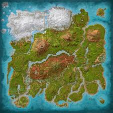
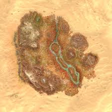
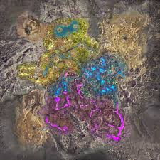
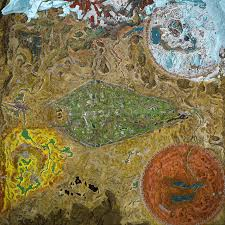
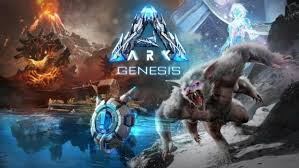
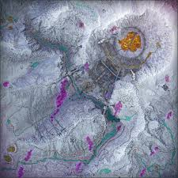
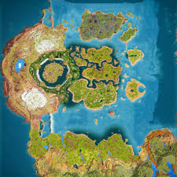
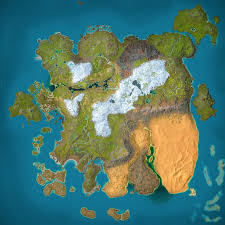
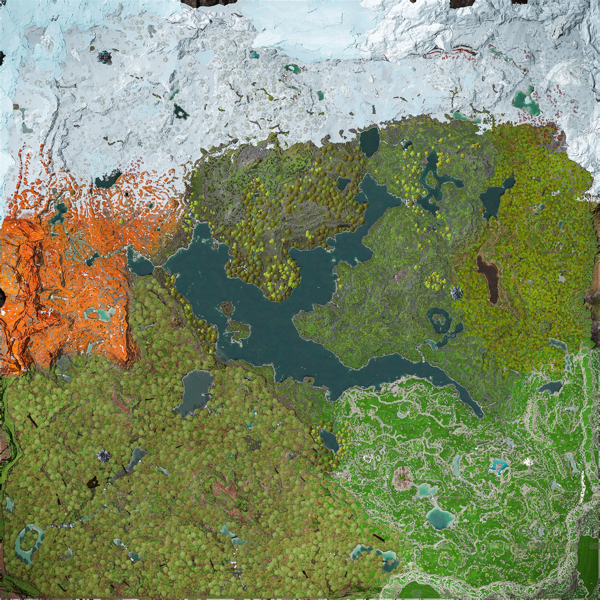
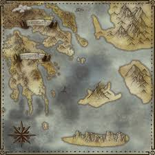

ASA Official Maps
- Lore maps:
-
- The Island
- Scorched Earth
- Aberration
- Extinction
- Genesis: Part 1+2
- Lost Colony
- Non-lore maps:
- - The Center
- - Ragnarok
- - Valguero
- - Astraeos
Lore maps:
1. The Island

The Island is the main map in ARK: Survival Ascended where players start their survival journey. It has many different environments such as beaches, forests, and mountains. Players can explore the island, tame dinosaurs, and collect resources to survive. The map also contains caves and special locations with important items. Overall, The Island is a great place to explore, build bases, and progress in the game.
2. Scorched Earth

Scorched Earth is a harsh desert map in ARK: Survival Ascended with extreme heat, sandstorms, and scarce resources. It features deserts, canyons, mountains, and oases where players can find water and food. Players must adapt to survive by managing hydration and avoiding deadly creatures. The map is home to unique dinosaurs and other creatures not found on The Island. There are also caves and resource-rich areas for crafting and building. Overall, Scorched Earth offers a challenging survival experience in a dangerous but rewarding environment.
3. Aberration

Aberration is an underground map in ARK: Survival Ascended full of caves, cliffs, and glowing biomes. It is dark, hazardous, and filled with radiation zones that make survival difficult. Players must navigate vertical terrain, avoid deadly creatures, and manage light and oxygen. Aberration introduces unique creatures and hazards not found on other maps. There are also hidden resources and special areas for crafting advanced gear. Overall, Aberration offers a tense and exciting survival experience in a mysterious underground world.
4. Extinction

Extinction is a post-apocalyptic map in ARK: Survival Ascended set on a ruined Earth overrun by massive Titans. It features wastelands, cities, and desert areas where players scavenge for resources and fight powerful creatures. Players can explore corrupted zones, tame unique dinosaurs, and gather tech materials for advanced crafting. The map also has missions and objectives that lead to battling the Titans themselves. Extinction challenges players with both environmental hazards and aggressive enemies. Overall, it offers a high-stakes survival experience with a mix of exploration, combat, and strategy.
5. Genesis: Part 1+2

Genesis is a futuristic, biome-diverse map in ARK: Survival Ascended split into two parts: Genesis Part 1 and Part 2. It features unique environments like lush forests, deserts, snowfields, underwater zones, and volcanic areas. Players can complete missions, tame new creatures, and gather advanced resources to survive. The map also introduces tech devices, special events, and environmental hazards like storms and toxic zones. Exploration is rewarded with hidden caves, collectibles, and powerful bosses. Overall, Genesis offers a dynamic survival experience with a mix of adventure, strategy, and high-tech challenges.
6. Lost Colony

Lost Colony is a new expansion map for ARK: Survival Ascended released in December 2025. It adds a frozen, post-apocalyptic world called Arat Prime with unique biomes like tundra, a bioluminescent Twilight Forest, and a ruined gothic city at the center. Players can explore harsh terrain, face corrupted creatures, uncover lore through Explorer Notes, and complete challenges in different zones. The map also introduces new creatures, advanced progression systems, and narrative content that continues the ARK story between Extinction and Genesis. Lost Colony mixes survival, exploration, and story-driven gameplay in a dramatic setting. Overall, it offers a very different and ambitious experience compared with the classic ARK maps.
Non-Lore maps:
The Center

The Center is a large map in ARK: Survival Ascended known for its massive floating islands and vertical terrain. It features forests, beaches, mountains, and underwater areas, offering a variety of biomes for players to explore. Players can tame dinosaurs, gather resources, and build bases across both the ground and floating islands. The map also contains caves with artifacts and rare resources for crafting advanced gear. Its unique verticality and open spaces make exploration exciting and challenging. Overall, The Center provides a balanced survival experience with plenty of opportunities for adventure and discovery.
Ragnarok

Ragnarok is a massive, diverse map in ARK: Survival Ascended with forests, mountains, deserts, and snowy regions. It features towering cliffs, rivers, beaches, and hidden caves filled with resources and artifacts. Players can tame a wide variety of dinosaurs and other creatures unique to the map. Ragnarok also includes volcanoes, ocean areas, and floating islands for advanced exploration. Its large size and variety of biomes encourage both building and adventuring. Overall, Ragnarok offers an expansive and exciting survival experience with endless opportunities for exploration and conquest.
Valguero

Valguero is a large, diverse map in ARK: Survival Ascended featuring forests, deserts, snowy mountains, and tropical areas. It includes both underground caves and towering cliffs, providing many places to explore and build bases. Players can tame a variety of dinosaurs and discover unique creatures not found on other maps. The map also has abundant resources, hidden artifacts, and challenging areas for advanced crafting. Its mix of biomes and terrain encourages both exploration and strategic survival. Overall, Valguero offers a balanced and engaging experience for players who enjoy adventure and building.
Astraeos

Astraeos is an official expansion map for ARK: Survival Ascended that launched in February 2025 with a Greek mythology–inspired world created in partnership with a community modder. It’s a large, premium DLC map featuring marble cliffs, ancient ruins, sacred temples, and biomes inspired by Mediterranean landscapes and legendary myths. Players can explore beaches, mountains, deserts, and ocean zones while facing powerful new bosses and minibosses unique to the map. Astraeos also adds new creature variants (like the Maeguana) and a teleportation fast-travel system between spawn areas. The map’s design encourages exploration, combat, and survival challenges with resources, caves, and hidden points of interest. Overall, Astraeos offers a mythic and adventurous twist on ARK’s survival gameplay.